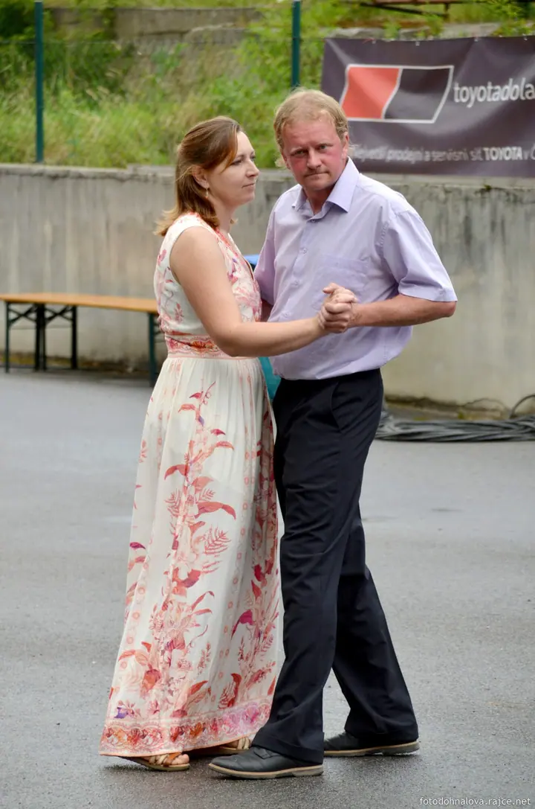
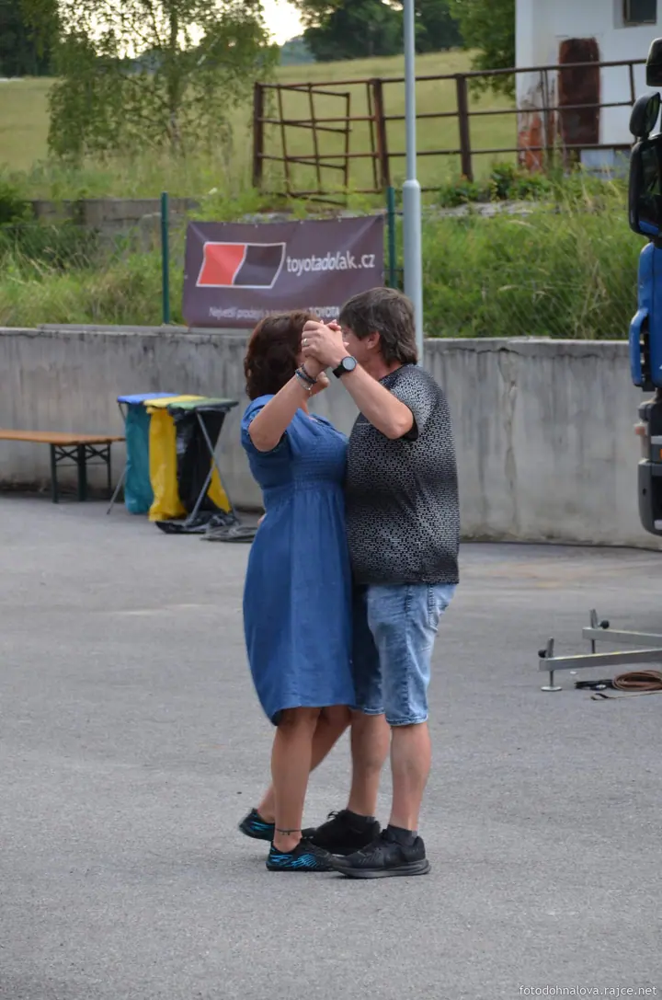
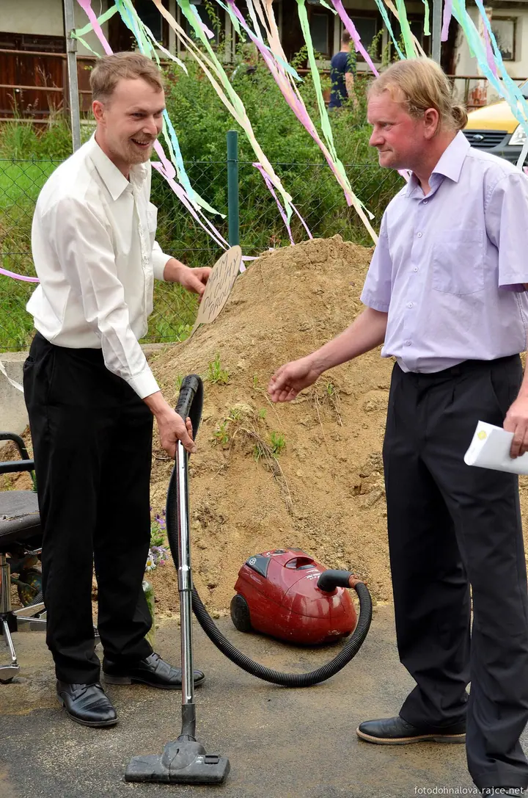
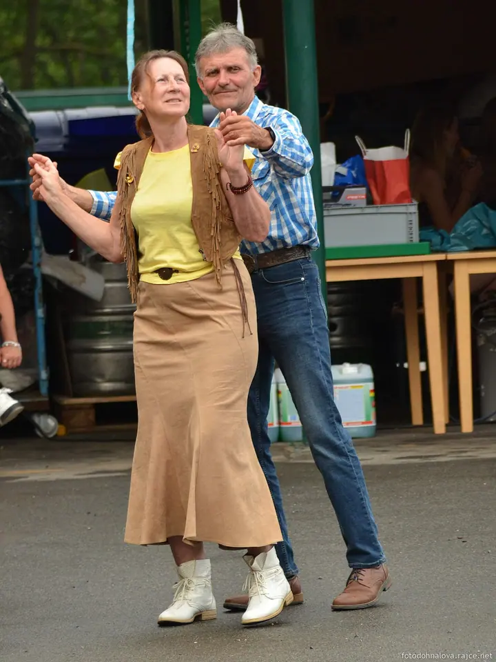
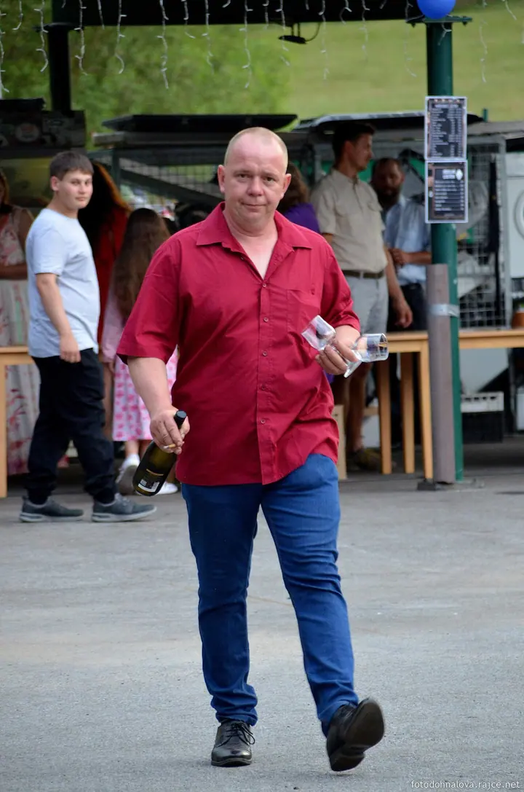
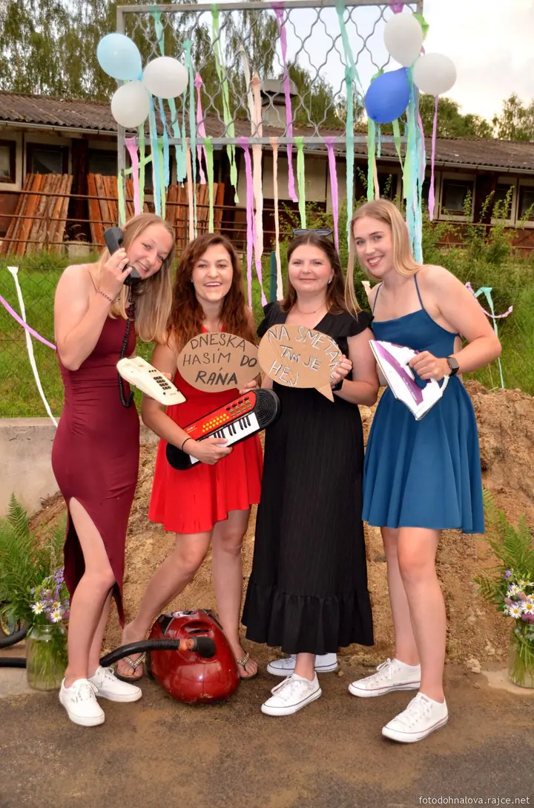
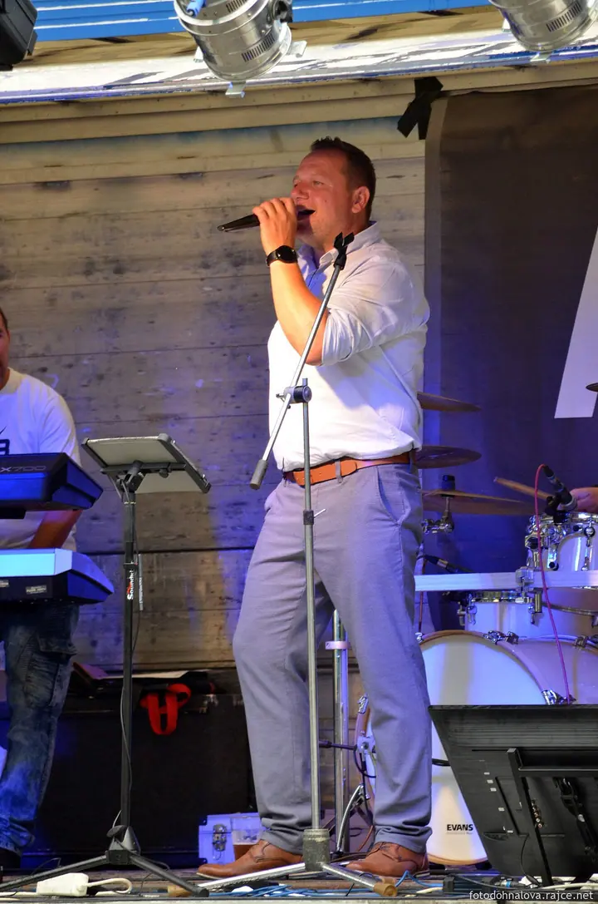
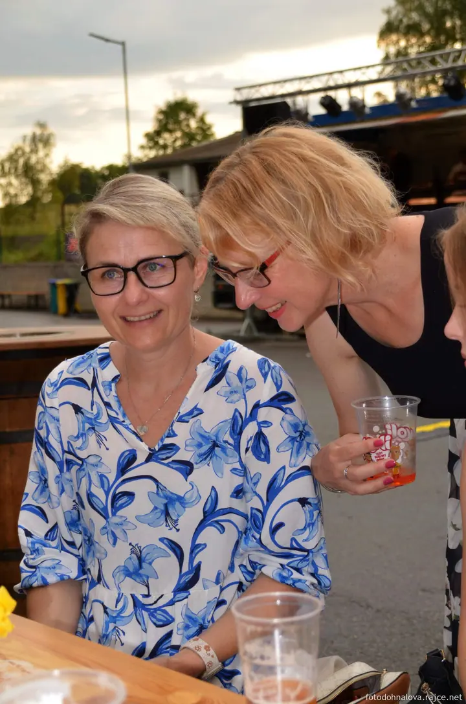
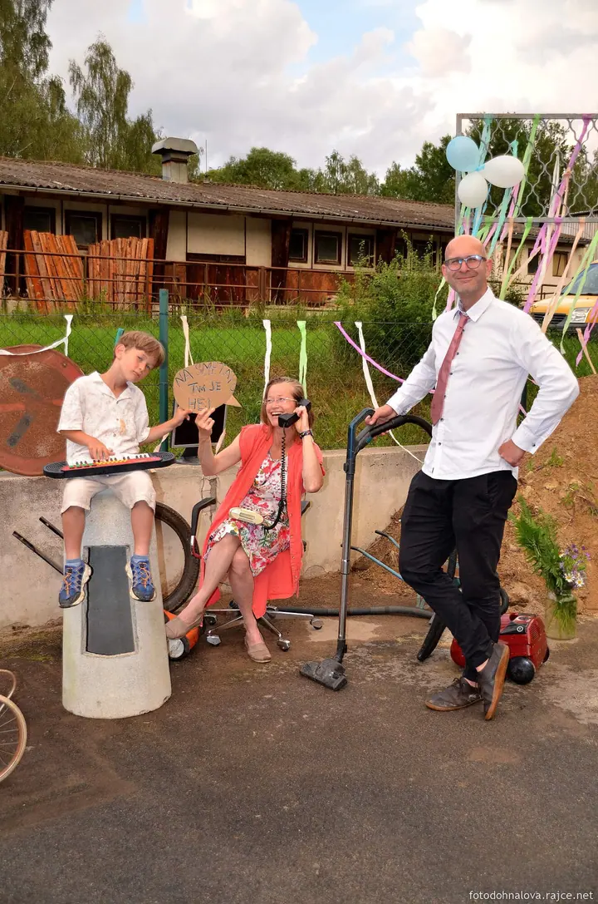

01 / 02
Akce a slavnosti
Fotím akce, zábavy, slavnosti i hasičské a sportovní dny na Táborsku. Zaměřuji se na tanec, muziku, smích a lidi, kteří se baví.
Zeptat se na termín→








Fotím akce, kde se tančí a slaví
Zeptat se na termín →(01) Ahoj
Jmenuji se Petra Dohnalová a fotím akce, zábavy a slavnosti na Táborsku a v okolí Nadějkova. Nejraději mám chvíle, kdy se lidé roztančí a zapomenou, že je někdo fotí .
(02) Co fotím
01 / 02
Fotím akce, zábavy, slavnosti i hasičské a sportovní dny na Táborsku. Zaměřuji se na tanec, muziku, smích a lidi, kteří se baví.
Zeptat se na termín→Dále nabízím
Fotím také děti, přirozeně a bez zbytečného aranžování. Klidně se mi ozvěte e-mailem a domluvíme se, co by se vám líbilo.
↗(04) Postup
Od první zprávy po hotovou galerii.
Krok 1 z 4
Pošlete mi e-mail s datem, místem a krátkým popisem akce. Fotím v Táboře a okolí.
Krok 2 z 4
Probereme, co je pro vás na akci důležité a na co se mám zaměřit.
Krok 3 z 4
Pohybuji se mezi lidmi a fotím, jak akce plyne. Tanec, hudbu, rozhovory i společné fotky.
Krok 4 z 4
Vybrané a upravené fotky vám předám v online albu, kde si je můžete prohlížet i sdílet.
Když hraje muzika, nikdo nestojí
(05) Za objektivem
Fotím hlavně tam, kde se něco děje. Vesnické zábavy, slavnosti, sportovní dny a další akce v Táboře a okolí. Na fotkách mě zajímají lidé: kdo s kým tančí, kdo se směje a kdo zrovna zpívá na pódiu.
Svoje fotky sdílím v albech na Rajčeti, fotodohnalova a fotopd. Starší snímky z různých akcí a z okolí Nadějkova sahají až do roku 2009. Doufám, že vás moje alba potěší i pobaví.
Pokud chystáte akci nebo byste chtěli fotky dětí, napište mi na e-mail. Ráda se domluvím.
Petra
Petra Dohnalová · Fotografka akcí a slavností
Oblast focení je Tábor a okolí, často fotím také v okolí Nadějkova. Pokud je akce dál, napište mi a domluvíme se.
Zábavy, slavnosti, sportovní a společenské akce. Prostě všude tam, kde se lidé schází a baví.
Nejjednodušší je napsat e-mail na dohnalpetra@seznam.cz.
Na fotografie si vyhrazuji autorské právo. Pokud je chcete použít, kontaktujte mě e-mailem a domluvíme se.
(07) Kontakt
Napište pár vět o tom, co si představujete, a termín, který se vám hodí.
dohnalpetra@seznam.cz